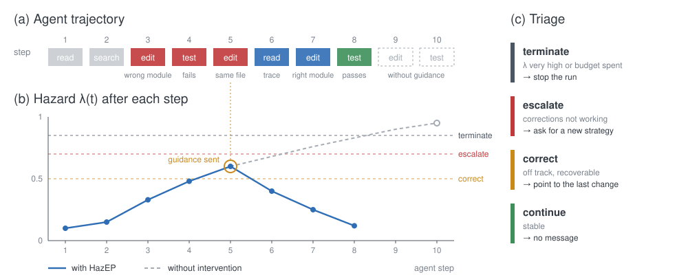

HazEP:
Catching LLM agent errors before they cascade
TL;DR
When an LLM agent makes a mistake, the mistake rarely stays small: one wrong edit early in a run can waste dozens of later steps and still end in failure. Most methods only look at the run after it has failed.
HazEP watches the agent while it works. After every step it estimates a hazard, the risk that an error is about to cascade, and decides whether to continue, correct, escalate or stop, returning a short message to the agent before its next step.
A small hazard model that reads only the structure of each step, with no model call, ranks risky steps with a concordance index of 0.91 on tasks it has never seen.
Predict
Is this run about to go wrong?
Learned hazard model, 20 structural features, no model call
0.91concordance index on 384 held out tasks
Act
What is the smallest useful intervention?
Triage over the hazard and its recent trend
4actions: continue, correct, escalate, terminate
Software engineering agents work in long loops: read a file, edit it, run the tests, repeat. When one of those decisions is wrong, for example an edit to the wrong module, the steps that follow tend to build on it. By the time the run fails, most of its budget has gone into the mistake.
Existing work mostly treats this as a diagnosis problem. Given a failed trajectory, find the step that caused the failure[1, 2, 3] and then repair or replay it. That is valuable for understanding failures, but it pays for the whole failed run first and cannot interrupt a cascade while it is happening. HazEP asks a different, online question: given the steps so far, is the run entering a cascade right now, and what should we say to the agent?
Hazard: an online view of failure
HazEP borrows its central idea from survival analysis. A trajectory is a sequence of steps that may, at some point, cross into a state the agent cannot recover from. After step t, a monitor outputs a hazard λ(t) between 0 and 1: the estimated risk that the run is entering a cascade at that step.

Three ingredients turn this idea into a monitor:
- A step scorer that maps the trajectory so far to a hazard value.
- A triage rule that maps the hazard, and the shape of its recent history, to an action.
- Guidance: a short message for the agent that explains what looks wrong and what to try instead.
Scoring
How is the hazard of a step estimated?
HazEP supports several scorers behind one interface, so they can be compared directly:
- Learned hazard model. A gradient boosted regressor over 20 structural features of each step: its position in the step budget, the action type (edit, run, test, read or search), the lengths of the action and observation, whether the observation reports an error, a traceback or a passing test, how often recent actions repeat, how many files have been touched, and how many steps have passed since the last error. Every feature is available while the agent runs. The model is distilled from LLM judge labels, so at inference time it needs no model call at all.
- Rules. Five deterministic detectors for editing the wrong module, stagnation, regression, scope creep and token waste.
- LLM judge. A language model reads each step and returns a hazard and error labels.
- Composite. The judge and the rules combined by taking the larger hazard.
Triage
What should happen when the hazard rises?
The hazard is mapped to one of four actions. Continue leaves the agent alone. Correct sends a short message asking the agent to re check its last change or return to an earlier safe point. Escalate asks for a different strategy, or flags a hand off to a stronger model, when corrections have stopped working. Terminate recommends ending the run when no realistic recovery path remains or the budget is nearly spent.
Triage also reads the trend of the hazard. It classifies the recent curve as linear, amplifying or damped, estimates the probability that the run survives, and records the last safe checkpoint the agent could return to. HazEP only recommends: the agent framework decides whether to deliver the message or stop the run, which keeps the monitor independent of any particular agent.
Baselines
HazEP is compared with methods that act after a failure, methods that act offline against a reference, and methods that act online during the run.
| Method | When it acts | Idea |
|---|---|---|
| REFLECT [1] | After failure | Attributes the error in a failed trace, supported by targeted interventions |
| AgenTracer [2] | After failure | Finds the failure inducing step by counterfactual replay |
| FALAT [3] | After failure | Traces the failure backward along step dependencies |
| STeCa [4] | Offline | Calibrates a trajectory step by step against a reference run |
| SWE-TRACE PRM [5] | Online | Rubric based process reward model that scores each step |
| Course correcting PRM [6] | Online | Periodically reviews a window of recent steps and steers the agent |
| Self reported confidence | Online | Intervenes when the agent's own confidence drops |
| Fixed frequency checks | Online | Checks the run every N steps, whatever its state |
| No intervention | Never | The unmodified agent |
Related work
Failure attribution. A growing line of work asks which agent, and which step, caused a failure. Taxonomies of agent failures show that most failed runs trace back to a small number of root causes that then propagate[7, 8], and benchmarks and methods for automated attribution locate the decisive step after the fact[9, 10]. HazEP shares the premise that errors propagate, but acts on it during the run rather than after it.
Early failure prediction. Closest in spirit are methods that predict failure before a run ends: a probe cascade over model activations that aborts doomed episodes with controlled recall[11], and weakly supervised alerting over dialogs and agent trajectories[12]. HazEP needs no access to model internals and offers a richer action space than abort or continue. Modelling uncertainty propagation with self exciting point processes[13] is a close analogue of the amplifying and damped patterns HazEP reads from its hazard curve.
Cost of failure. Measurements of where tokens go in agentic software engineering[14] and of whether agents respect a budget[15] show how much of an agent's spend is lost to failed and circular work, which is the waste an early intervention can recover.
Experiments
Experiment 1
Can a cheap model predict hazard from step structure alone?
An LLM judge gives a rich hazard signal but costs one model call per step. The first question is whether that signal survives when we keep only features that are free to compute. We trained the learned hazard model on 9,721 steps from 1,532 software engineering tasks and evaluated it on 2,326 steps from 384 held out tasks, with no task shared between the splits. Features that would leak the answer, such as overlap with the files changed by the reference fix, were fixed to neutral values, because they are unknown during a real run.
| Metric on held out tasks | Value |
|---|---|
| Concordance index | 0.91 |
| AUC, high hazard (λ ≥ 0.5) | 0.90 |
| AUC, elevated hazard (λ ≥ 0.3) | 0.85 |
| Mean absolute error | 0.074 |
| R2 | 0.77 |
| Expected calibration error | 0.012 |
Most of the judge's signal is recoverable from structure alone. The model orders steps by risk almost as the judge does and is well calibrated, while needing no model call. This makes it practical to score every step of every run, and to use the expensive judge only where the cheap model is uncertain.
These numbers measure agreement with the judge's labels on unseen tasks. Agreement with the judge is not the same as predicting task failure, which Experiment 2 addresses.
Experiment 2
Does intervening during a live run help?
Detecting risk is only half of the problem. In early trials on live agent runs, the first judge was too lenient: its hazard stayed low on almost every step, so real corrections rarely fired, while periodic checkpoint messages added tokens without carrying a useful signal. The lesson is that an intervention is only as good as its calibration and its message. Guidance must point at concrete evidence in the trajectory, such as the repeated edit or the test that keeps failing, to help the agent rather than distract it.
Citation
Please cite this post as
Paul Trust. “HazEP: Catching LLM agent errors before they cascade.” July 2026. https://paultrust26.github.io/paultrust/blog/hazep.html
or in BibTeX
@misc{trust2026hazep,
title = {{HazEP: Catching LLM agent errors before they cascade}},
author = {Trust, Paul},
year = {2026},
month = jul,
howpublished = {\url{https://paultrust26.github.io/paultrust/blog/hazep.html}},
note = {Blog post}
}References
- REFLECT: Intervention-Supported Error Attribution for Silent Failures in LLM Agent Traces[PDF]Lin, X., Wang, Y., Kwok, T.S.T., Guo, D., Nale, S.A., Fleming, C. and Cheng, G., 2026. arXiv preprint arXiv:2606.09071.
- AgenTracer: Who Is Inducing Failure in the LLM Agentic Systems?[PDF]Zhang, G., Wang, J., Chen, J., Zhou, W., Wang, K. and Yan, S., 2025. arXiv preprint arXiv:2509.03312.
- FALAT: Tracing Failures in LLM Agent Trajectories via Dependency-Guided Search[PDF]Rafi, M.N., Ahasanuzzaman, M., Kim, D.J., Wang, Z. and Chen, T., 2026. arXiv preprint arXiv:2606.00765.
- STeCa: Step-level Trajectory Calibration for LLM Agent Learning[PDF]Wang, H., Wang, J., Leong, C.T. and Li, W., 2025. Findings of the Association for Computational Linguistics (ACL).
- SWE-TRACE: Optimizing Long-Horizon SWE Agents Through Rubric Process Reward Models and Heuristic Test-Time Scaling[PDF]Han, H., Xie, J., Ma, X., Zhu, W., Zhang, Z., Long, Z., Chen, H. and Ye, Q., 2026. arXiv preprint arXiv:2604.14820.
- When Agents go Astray: Course-Correcting SWE Agents with PRMs[PDF]Gandhi, S., Tsay, J., Ganhotra, J., Kate, K. and Rizk, Y., 2025. arXiv preprint arXiv:2509.02360.
- Why Do Multi-Agent LLM Systems Fail?[PDF]Cemri, M., Pan, M.Z., Yang, S., Agrawal, L.A., Chopra, B., Tiwari, R., Keutzer, K., Parameswaran, A., Klein, D., Ramchandran, K., Zaharia, M., Gonzalez, J.E. and Stoica, I., 2025. arXiv preprint arXiv:2503.13657.
- Where LLM Agents Fail and How They can Learn From Failures[PDF]Zhu, K., Liu, Z., Li, B., Tian, M., Yang, Y., Zhang, J., Han, P., Xie, Q., Cui, F., Zhang, W., Ma, X., Yu, X., Ramesh, G., Wu, J., Liu, Z., Lu, P., Zou, J. and You, J., 2025. arXiv preprint arXiv:2509.25370.
- Which Agent Causes Task Failures and When? On Automated Failure Attribution of LLM Multi-Agent Systems[PDF]Zhang, S., Yin, M., Zhang, J., Liu, J., Han, Z., Zhang, J., Li, B., Wang, C., Wang, H., Chen, Y. and Wu, Q., 2025. arXiv preprint arXiv:2505.00212.
- From Flat Logs to Causal Graphs: Hierarchical Failure Attribution for LLM-based Multi-Agent Systems[PDF]Wang, Y., Wu, W., Wang, J. and Wang, Q., 2026. arXiv preprint arXiv:2602.23701.
- Doomed from the Start: Early Abort of LLM Agent Episodes via a Recall-Controlled Probe Cascade[PDF]Ruan, K., Huang, Z., Zhou, Z., Wei, Q., Lin, J., Wang, X. and Sun, H., 2026. arXiv preprint arXiv:2607.06503.
- When Evidence is Sparse: Weakly Supervised Early Failure Alerting in Dialogs and LLM-Agent Trajectories[PDF]Baidya, A., Liang, X., Guo, R., Gao, X. and Das, K., 2026. arXiv preprint arXiv:2606.05414.
- HawkesLLM: Semantic Uncertainty Propagation in Agentic Text Simulation[PDF]Deng, Z., Ye, T. and Xie, L., 2026. ICML Workshop on Statistical Frameworks for Uncertainty in Agentic Systems.
- Tokenomics: Quantifying Where Tokens Are Used in Agentic Software Engineering[PDF]Salim, M., Latendresse, J., Khatoonabadi, S. and Shihab, E., 2026. arXiv preprint arXiv:2601.14470.
- BAGEN: Are LLM Agents Budget-Aware?[PDF]Lin, Y., Wang, Z., Liu, M., Shan, Y., Bai, L., Zhang, J., Jin, X., Chen, B., Su, J., Wang, X., Pei, J. and Li, M., 2026. arXiv preprint arXiv:2606.00198.